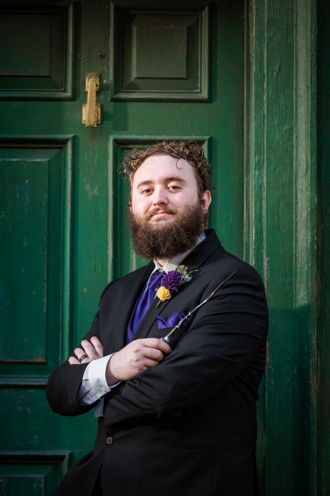

Welcome to My Portfolio
The about page contains most of the information on this website. I was going to include a picture of the KSU campus that I took, but I couldn't find one on my phone.
So instead here is a photo of the Ketchikan sign I took on my honeymoon cruise to Alaska.

About Me

I am Garrett Davis, a passionate college student/process engineer with three and a half years of experience in engineering. Throughout my career, I have worked for one main company, Unique Fabricating. That was until last November when they filed for bankruptcy and everyone who worked there lost their jobs. I worked an hourly job for around a month and then the company that purchased the Unique assets brought me back in to help launch and start the location again.
In addition to my professional endeavors, I also enjoy spending time with my wife, reading, watching movies, and playing video games. We also have started enjoying going to top golf and trivia nights with friends. I have mainly been reading fantasy books for most of my life and the main games I play are League of Legends, Rocket League and some other random games with friends. I would say my favorite game series of all time is the Dark Souls series though.
My journey through KSU has been any interesting one. I started majoring in computer engineering, and did that until I started an internship. After around a year of being in the internship, the person I was interning under got a promotion and they offered me his position. I took the job and took a year off from KSU to focus fully on my job, but when I started trying to attend again I realized that the computer engineering major couldn't be completed fully online. So, I changed to computer science as I still wanted to get a degree and the concentration in data analysis will still be useful for my job.